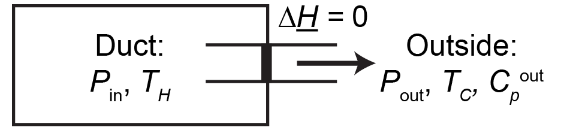

Problem Set 5 (Due Wednesday, November 29, 2023)#
Question 1: Actual gas expansion#
\(N\) moles of an ideal gas at a temperature \(T_1\) are adiabatically expanded from a pressure \(P_1\) to a pressure \(P_2\). The amount of work produced by a reversible adiabatic expansion between these two pressures is calculated to be \(\delta \underline{W}_\textrm{rev}\). The amount of work extracted when the process is actually performed is instead measured as \(\delta\underline{W}_\textrm{actual}\), although the process is still adiabatic. The heat capacities of the gas at constant volume and constant pressure are \(C^0_V = 5R/2\) and \(C^0_P = 7R/2\), respectively, and are not found to depend on temperature.
(a)
What is the final temperature, \(T_2\), of the gas after the expansion (i.e., the temperature when the process is actually performed)?
(b)
What is the entropy change of the gas during the actual process?
Question 2: Equations of state#
Consider a system with the fundamental relation:
\(\theta, R\) and \(V_0\) are positive constants.
(a)
Find the three equations of state for \(T\), \(P\), and \(\mu\) for this system, and further show that \(\mu = -U\).
(b)
Demonstrate that only two of the intensive parameters are independently variable.
Question 3: High pressure gas#
A gas at high pressure flows through a duct. A thermometer held within the duct measures the temperature of the gas at a high temperature \(T_H\). A small amount of gas is then released from the duct through a valve to the outside atmosphere, which has a pressure \(P_\textrm{out}\). The process by which this gas is released occurs at constant enthalpy (where \(\underline{H}=\underline{U}+P\underline{V}\)) as indicated in the diagram below.

Note that the enthalpy is a state function. The temperature of the gas leaving the valve is measured at a colder temperature \(T_C\). The gas obeys the equation of state:
where \(a\) and \(b\) are constants that do not depend on temperature or pressure. The molar heat capacity at constant pressure, \(C_P\), is defined as:
The heat capacity \(C_P^\textrm{out}\) is measured at the pressure \(P_\textrm{out}\) and does not depend on temperature.
Question
What is the pressure of the gas in the duct, \(P_\textrm{in}\), in terms of \(a\), \(b\), \(T_H\), \(T_C\), \(P_\textrm{out}\), and \(C_P^\textrm{out}\)?
Question 4: Calculus of thermodynamics#
It is often convenient to relate derivatives that are difficult to calculate experimentally to measurable materials parameters. Prove the following relationships by appropriately manipulating the relevant derivatives. The following materials parameters are defined:
The thermal expansion coefficient, \(\alpha =\frac{1}{V} \left ( \frac{\partial V}{\partial T} \right )_P\)
The isothermal compressibility, \(\beta =-\frac{1}{V} \left ( \frac{\partial V}{\partial P} \right )_T\)
The heat capacity at constant volume, \(C_V = T\left ( \frac{\partial S}{\partial T} \right )_V\)
The heat capacity at constant pressure, \(C_P = T\left ( \frac{\partial S}{\partial T} \right )_P\)
(a)
\(\left ( \frac{\partial S}{\partial P} \right )_{V} = \frac{C_V}{T} \frac{\beta}{\alpha}\).
(b)
\(\left ( \frac{\partial T}{\partial P} \right )_S = \frac{T\alpha V}{C_P}\)
(c)
\(\left ( \frac{\partial C_V}{\partial V} \right )_T = T\left ( \frac{\partial^2 P}{\partial T^2} \right )_V\)